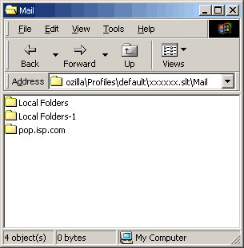

あなたがお使いの OS の一般的な既知の問題については Mozilla 1.4.1 リリースノート をお読みください。
- 1. 私のページが Mozilla で正しく見えないのはなぜ?
-
Mozilla は、できる限り完全にインターネット標準をサポートするよう設計されています。サイトの中には (Mozilla や Opera、Internet Explorer 6 といった、どの最新のブラウザでも理解できる、標準に準拠したコードではなく) 古い非標準のブラウザに合わせて書かれているページもありますし、Mozilla をブロックするために 誤ったブラウザ判別法 を使用しているものもあります。このような場合は、サーバ設定とページのソースコードをアップデートするよう、サイトの管理者に連絡してください。
- 2. ある Web サイトのファイルを見ようとしていて、アドレスに間違いはありませんが、スクリーンに表示されるのは文字化けの塊だけです。
-
これに対する通常の対処法は、リンクを右クリックして、「リンク先を名前を付けて保存」 (Save Link Target As) を選択し、ファイルをディスクに保存してから、保存したファイルをローカルで見る事です。
最もよくある原因は、Web サーバが、そのファイルをプレーンテキストファイルとして送信している事です。設定の間違いをサイトの管理者に連絡してください。
- 3. 私の取引銀行のサイトが Mozilla で見られません。
-
一部の金融機関のサイトは、Mozilla からのアクセスをブロックしています。これは、サイトの管理者が Mozilla のセキュリティ機能を理解していないことが原因です。Mozilla は安全であり、サイト側が拒否した場合にはパスワードなどの機密情報を保存しません。Mozilla に対するブロックを取り除くよう、銀行に掛け合ってください。
- 4. 自分のプロファイルで Mozilla を開けません。自分のプロファイルは使用中だと言われます。
-
プロファイルディレクトリ の中にある parent.lock あるいは lock、.parentlock というファイルを探してください。そのファイルを削除してください。(このファイルは、Mozilla や Mozilla ベースとしたブラウザの複数インスタンスが同時に同じプロファイルにアクセスするのを防ぐため、起動時に作成され、終了時に削除されます)
- 5. セキュアな (https://) Web サイトにアクセスできないのはなぜ? (Linux)
-
最もありがちな原因は、あなたが Mozilla をインストールした時に、Personal Security Manager (PSM) をインストールしなかった、という事です。Mozilla をアンインストールして、PSM を含めて再インストールしてください。また、直接インストール する事もできます。
- 6. 私は、透過プロキシ (たとえば Junkbuster) を使っていて、ブラウズすると奇妙な問題が生じます。何が起こっているのでしょう?
-
透過プロキシ (transparent proxy) の中には、HTTP/1.1 を正しく扱えないもの (Junkbuster のいくつかのバージョンを含む) があります。最初に試すべきことは、編集｜設定｜詳細｜HTTP ネットワーク (Edit | Preferences | Advanced | HTTP Networking) を開いて、「HTTP 1.0 を使う」 (Use HTTP 1.0) を選択することです。
- 7. リンク上で中クリック (または Ctrl + クリック) しても新しいタブが開かれません。
-
中クリック (または Ctrl + クリック) で新しいタブにリンクを開くオプションはデフォルトで無効になっています。このオプションを有効にするには、Edit メニューを開いて Preferences を選択してください。左ペインの Navigator > Tabbed Browsing カテゴリを開きます。
Middle-click, Control+click or Control+Enter on links in a Web page
をチェックしてください。 - 8. 今使用しているテーマが気に入っていますが、奇妙な現象が発生します。修正する方法はありますか?
-
サードパーティのテーマの中には、fakeAccount.css という名称のファイルがないものがあります。このファイルがないと、ウィンドウの最小化が正常に行なえないなどの不具合が生じる事があります。そのテーマのより新しいバージョンがあるかチェックしてください。
テーマファイルで実験してみたいのであれば、fakeAccount.css という名称のファイルを作成して、それを該当するテーマの JAR に入れてみましょう。JAR は標準的な zip ファイルですから、お好みの zip ユーティリティで開いたり書き直したりできます。問題が生じたときのために、オリジナルの JAR ファイルは手元に保存しておきましょう。
これでも問題が解決せず、そのテーマをアンインストールして Classic か Modern を使用すれば問題が生じないのであれば、そのテーマの作者に報告してください。
- 9. Mozilla のアドオン XPI をウェッブページから直接インストールしようとしたのですが、「インストール」のリンクをクリックしても動作しません。
-
これが動作するためには、JavaScript (編集｜設定｜詳細｜スクリプト＆ウィンドウ) とソフトウェアインストール (編集｜設定｜詳細｜ソフトウェアインストール) の両方が有効になっていなければなりません。
もしこれでもダメなら、XPI をダウンロードして直接インストールしてみてください。
- 10. Mozilla アドオンの XPI をダウンロードしましたが、どうやってインストールしたらいいのかわかりません。
-
ソフトウェアインストールが有効になっていることを確認した上で、そのファイルを Mozilla で開きます。ブラウザウィンドウにドラッグするか、ファイル｜ファイルを開く (File | Open File) で開くか、アドレスバーにそのファイルがある場所を入力するか、あるいは (Windows なら) XPI をダブルクリックして Windows が .xpi ファイルを Mozilla で開くように設定します。
- 11. XPI でインストールしたものをアンインストールするには?
-
テーマ以外のものでは、自動的に XPI をアンインストールする方法はまだありません。しかし、新しいビルドをインストールする前に古い Mozilla をアンインストールする時に、不要な XPI を手動で削除できます。
- 12. サイドバーの中身が表示されません。
-
F9 キーを使用して、いったんサイドバーを閉じた後、再び開いてみてください。もしこれがうまく行かなければ、プロファイルが壊れている のかも知れません - 新規のプロファイルを作成して、サイドバーが動作するか確認してください。
- 13. 助けて! e-メールにアクセスできなくなっちゃった!
-
Mozilla メールで e-メールの問題を生じる一般的な原因は二つあります:
Mozilla のテストビルドの中に、メールフォルダの圧縮が正しく行なえず、圧縮すると中のメールが Mozilla メール/ニュースで読み込めなくなるものがある事が知られています。
メールの要約ファイル (拡張子が .msf のファイル) が壊れた。
1 番目の場合: メールファイルはプレインテキストで保存されているので、メールファイルをテキストエディタ (またはワードプロセッサ) で開いて、手作業で編集して回復を試みる事ができます。
2 番目の場合: Mozilla を (高速起動も含めて) 終了し、ユーザープロファイル で、e-メールを含んでいるフォルダ (Mail と、もし IMAP を使用していれば、ImapMail フォルダ) を見つけます。メールフォルダをバックアップし、 .msf ファイルを削除します。拡張子のないファイルは削除しないこと – これは e-メール本体を保存しているファイルです。Mozilla メールを再起動すれば、新しい要約ファイルが自動的に作成されるでしょう。
- 14. 私は GNOME を使っています。mozilla.org のバイナリから Mozilla をインストールしたら、Nautilus がうまく動作しなくなりました。
-
もし Nautilus が、Mozilla Gecko レンダリング・エンジンを使うように設定されていると、その上に mozilla.org のバイナリをインストールした時に奇妙な問題とコンフリクトが生じるかも知れません。あなたの Unix または GNU/Linux のディストリビューターから供給される Mozilla のパッケージを使用するべきで、彼らのバージョンはその GNOME のパッケージで正常に動作する筈です。
Mozilla の テストビルド をインストールしたいのであれば、それをデフォルト以外の場所 (例えば、あなたの home ディレクトリ) にインストールして、システムのデフォルトが古いディストリビューターのバージョンを使用するようにしてください。
- 15. アンチウィルスソフトが、INBOX にウィルスがいると考え、INBOX へアクセスさせてくれません!
-
これが生じるのは、アンチウィルスソフトが、 (実際に悪意のあるコードが侵入しうるものだけではなく) 全てのファイルをチェックし、それがウィルスの兆候と思うファイルは全てロックあるいは検疫するように設定されている場合です。
アンチウィルスソフトをオフにして、inbox を開き (ウィルスを含んでいる可能性のある添付ファイル付きのメールを全て削除し) 、スキャンするファイルの種類を実際に悪意のあるコードが侵入しうるものだけにし、もしそうなっていればアンチウィルスソフトの「偏執狂」モードを解除して、再びオンにします。
Mozilla Mail は、既知の e-メールウィルスには感染しません。
- 16. ツールバー/メニューバーが消えてしまいました! 元に戻すには?
-
View > Show/Hide メニューでツールバーが元に戻らない場合、メニューバー/ツールバーエリアのあった辺りを見てください。小さな長方形のボックスが見つかるはずです。ボタンをクリックすればツールバーが表示されます。
- 17. パーソナルツールバーの中身が空になって、ブックマークを追加できません。どうすれば直りますか?
-
Bookmark Manager を開いてください (Bookmarks メニューを開いて Manage Bookmarks を選択)。ウィンドウの中にある Personal Toolbar Folder を選択してください。View メニューを開いて、Set as Personal Toolbar Folder を選択してください。
これでも直らない場合、Mozilla を完全に終了し、プロファイル の中にある localstore.rdf というファイルを削除してください。(注意: これによって、ツールバーのボタンや Sidebar の表示など、一部の UI 設定が失われますが、これらは簡単にリセットできます)
- 18. 大きいファイルをダウンロードできません。
-
Mozilla にファイルをダウンロードする場合、ファイルはまず一時ディレクトリに保存され、それから目的のディレクトリに移動されます。一時ディレクトリのスペースが制限されている場合、そのスペースを増やすか、大きいファイルのダウンロードについてはダウンロードマネージャを使うことを考えてください。
- 19. 最近ファイルのダウンロードが非常に遅いです。なぜ?
-
ダウンロードの履歴リストが巨大になると、ファイルのダウンロード開始・完了が遅くなってしまいます。このリストをクリアするには、Tools メニューを開いて Download Manager を選択してください。削除したいエントリーを選択してください (Shift キーを押しっぱなしにすると続けて選択できます。Ctrl キーを押すと複数のエントリーを飛び飛びに選択できます)。それから Remove をクリックすれば、選択したエントリーがリストから削除されます。
- 20. Mozilla を終了したらシステムがクラッシュして、メールがすべて消えてしまいました。どうすればいいの?
-
設定ファイルが破損して、デフォルトにリセットされてしまったようです。プロファイルフォルダに バックアップ コピーがあれば、最も簡単な方法は prefs.js ファイルを修復することです。
プロファイルのバックアップがない場合は、以下の手順に従ってください。
-
まず、プロファイル を別の場所にコピーしてください。
-
それから、プロファイル ディレクトリの Mail サブディレクトリに移動してください。サブディレクトリ名をすべて見られるようにするには (エクスプローラの) 表示設定を変更してください。

-
Mozilla の Mail & Newsgroup を起動します。File (ファイル) メニューを開いて Offline (オフライン) を選択し、サブメニューから Work Offline (オフライン作業) を選択してください。
-
メールアカウントを再作成してください。
POP3 アカウントの場合 (メールはお使いのコンピュータにダウンロードされます): 受信サーバを入力するよう求められたら、Mail ディレクトリに表示されているフォルダ名とまったく同じ名前を入力してください。アカウント設定の最後で、メッセージをダウンロードするチェックボックスを見て、チェックが入っていないことを確認してください。
IMAP アカウントの場合 (メールはサーバに保存されます): 特別は手順は必要ありません。
-
再度 Mail ディレクトリに戻ります。POP3 アカウントをお持ちであれば、そのアカウントと重複したフォルダが作成されているはずです。
-
これまでのニュースグループアカウントを復元したい場合は、プロファイルの News ディレクトリに移動します。
Mail & Newsgroup でニュースグループアカウントを再作成してください。ニュースグループサーバを入力するよう求められたら、News ディレクトリに表示されているフォルダ名とまったく同じ名前を入力してください。
再度 News ディレクトリに戻ります。ニュースグループアカウントと重複したフォルダとファイルが作成されているはずです。
-
Mozilla を完全に終了してください。
-
プロファイルの中にある prefs.js ファイルをテキストエディタで開いてください。
-
新規アカウントのディレクトリ名が書かれている行を探してください。例:
user_pref("mail.server.server2.directory", "C:\\...\\Mail\\Local Folders-1");
user_pref("mail.server.server3.directory", "C:\\...\\Mail\\pop.isp-1.com");
user_pref("mail.server.server4.directory", "C:\\...\\News\\news.isp-1.com");この行の最後の部分を元のアカウントディレクトリ名に変えてください。例:
user_pref("mail.server.server2.directory", "C:\\...\\Mail\\Local Folders");
user_pref("mail.server.server3.directory", "C:\\...\\Mail\\pop.isp.com");
user_pref("mail.server.server4.directory", "C:\\...\\News\\news.isp.com"); -
ファイルを保存してください。Mozilla を再起動すると、メールとニュースグループのデータがすべて復活しているはずです。
このようなトラブルを防ぐために、定期的にプロファイルを バックアップ するようお勧めします。
-
- 21. 助けて! ブックマークがすべて消えてしまいました!
-
大変不運なトラブルが起きて、あなたのブックマークは失われてしまいました。バックアップがない限り元に戻すことはできません。ブラウズの履歴からその一部を復元してみてください。(Go (移動) メニューの History (履歴) から) 履歴ウィンドウを開いて、ブックマークしたい URL の上で右クリックし (Mac OS ではオプションクリック)、Bookmark this Link (このリンクをブックマーク) を選択してください。
このようなトラブルを防ぐために、定期的にプロファイルを バックアップ するようお勧めします。